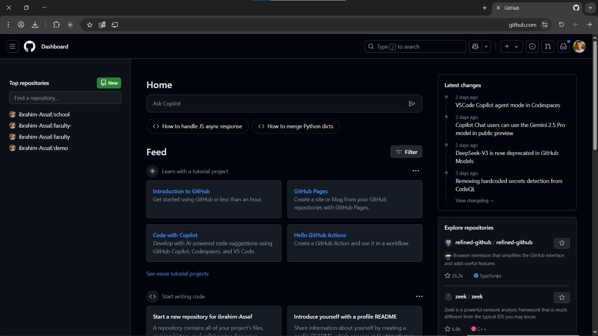
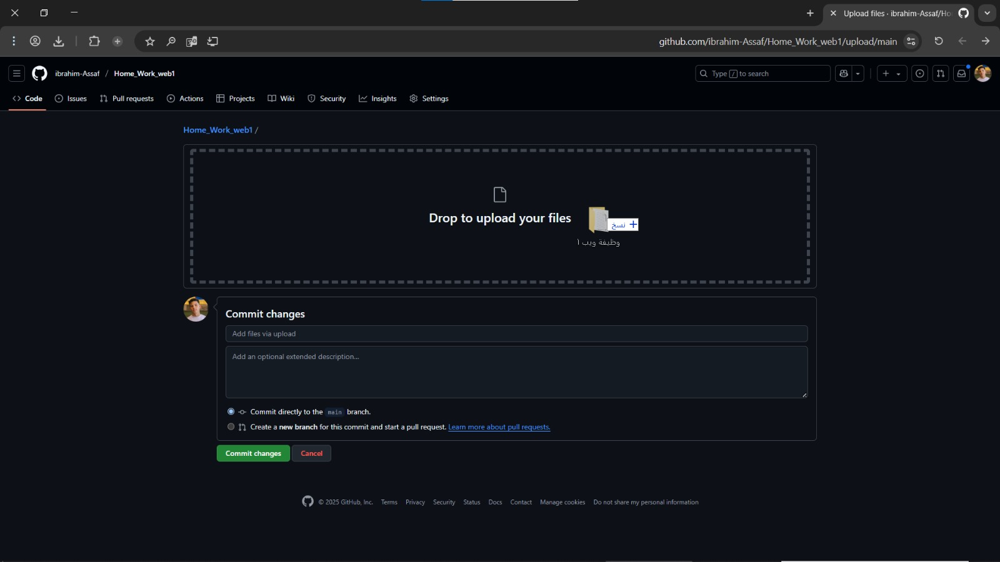

خطوات رفع ملف على GitHub

1. بعد انشاء الحساب توجه الى الصفحة الرئيسية للموقع
ادخل على GitHub ثم اكبس على الثلاث خطوط فوق بعضها ثم اختار new .

صورة توضح طريقة عمل الخطوة الاولى
2. إنشاء مستودع جديد
اكتب اسم المستودع الذي تريد انشاءه واختر public واضغط على create repository
صورة توضح طريقة عمل الخطوة الثانية
بعد انشاء المستودع اختار uploading an existing file
بعد انشاء المستودع اختار uploading an existing file
صورة توضح طريقة عمل الخطوة الثالثة
ستفتح صفحة جديدة قم بتحميل الملف عن طريق السحب والافلات || او عن طريق خيار choose your files قم بتحديد الملف الذي تريد رفعه
ملاحظة : يجب ان تختار الملفات التي تريد رفعها بشكل منفصل اذا حددت الملف بالكامل يمكن ان يحدث مشاكل
نختار commit changes
نضغط باليسار بدون افلات ونسحب المجلد
صورة توضح طريقة عمل الخطوة السادسة

نقوم بافلات المجلد هنا
نكتب اسم الرفع (اختياري ) ثم نضغط على commit changes
صورة توضح طريقة عمل الخطوة الخامسة
ستفتح صفحة جديدة ثم نتوجه الى settings ثم نختار pages ونختار main كما هو موضح في الصورة
صورة توضح طريقة عمل الخطوة الاخيرة
ملاحظة : ننتظر قليلا ثم نعيد تحميل الصفحة يضهر الرابط الخاص بالاستاضفة